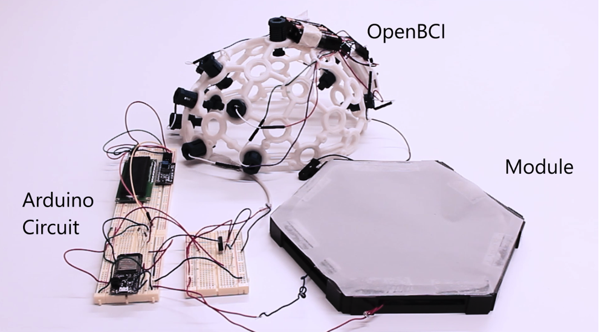

NeuraLux: A Neurological, Data-Driven, Ambient Lighting System for Task-oriented Work Environments
Project Overview
Lighting effects task performance, and inadequate lighting systems often result in poor quality of work and productivity. In work environments with general overhead lighting systems with manual pre-set lighting options, individuals do not perform at their highest level, resulting in early mental fatigue and decreased attention rates. This project, NeuraLux, examines ways to optimize the focus span with automated ambient lighting to ensure more efficient work settings so that individuals stay focused for longer during tasks. In order to give users the greatest lighting flexibility and energy efficiency, this lighting system works by automating adjustable task lighting via neurological data collection from users. The system was built by connecting an Arduino circuit to an OpenBCI headset, computer, and LED lighting panel. This new lighting system may prevent early burnout, decrease procrastination rates, and improve the overall satisfaction of individuals working under this ambient environment.

Figure 1: NeuraLux’s system overview: (a) Ambient lighting module, (b) Arduino circuit board, (c) OpenBCI headset
System Design
The NeuraLux lighting system consists of three components (Figure 6): (a) ambient lighting module, which is connected to (b) the Arduino hardware circuit board, which wirelessly receives data from (c) OpenBCI brain-computer interface headset for detecting EEG signals from the user and real-time classification.
Technological Implementation
An Adafruit Feather ESP32 microcontroller wirelessly transmits EEG data from the OpenBCI headset to the computer by using serial communication. Upon receiving data on the computer, the software classifies concentration (focus) levels in real-time based on the data analysis of alpha and beta band powers. The microcontroller is wired to a single NeuraLux lighting module and a LCD screen, powered by a 5-volt internal power source in the microcontroller for debugging the system during the engineering process and as a visual feedback of whether or not focus is detected. In addition, a 12-volt external power source for lighting the LED strips embedded inside the module and an imported Arduino script program for the microcontroller board allows a lighting module to turn on or off based on calculations of the classification algorithm, programmed using the Arduino IDE. Additionally, the raw EEG data was preprocessed and smoothened by the OpenBCI GUI software before being transmitted to the Arduino microcontroller board for focus detection
The following is the pseudocode of classification algorithm:
Focus == (alpha_average > 1.0uV) && (beta_average < 1.0 uV) && (alpha_average < 4 uV)
In other words, focus is detected when the average of alpha band power is greater than 1.0 uV and less than 4 uV, concurrently, the beta band power is less than 1.0 Uv.

Figure 2: Demonstration of the LED lighting up when focus is detected.

Figure 3: Demonstration of the LCD screen showing "Focused or "Not Focused" based on the measure of user's concentration level.
- CREDITS -
Team: Elle Luo, Jordan Rusoff, Nicholas He, Kerem Marin
DEA6520 The Ambient Environment Final Project, Cornell University
COPYRIGHT 2020 © ELLE LUO. ALL RIGHTS RESERVED.